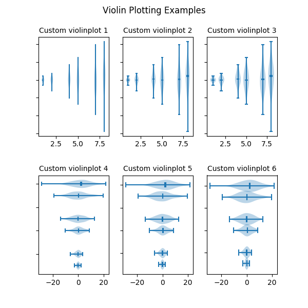

Version 3.1.1
The 2019 SciPy John Hunter Excellence in Plotting Contest is accepting submissions!
Apply by June 8th
Note
Click here to download the full example code
Violin plots are similar to histograms and box plots in that they show
an abstract representation of the probability distribution of the
sample. Rather than showing counts of data points that fall into bins
or order statistics, violin plots use kernel density estimation (KDE) to
compute an empirical distribution of the sample. That computation
is controlled by several parameters. This example demonstrates how to
modify the number of points at which the KDE is evaluated (points)
and how to modify the band-width of the KDE (bw_method).
For more information on violin plots and KDE, the scikit-learn docs have a great section: http://scikit-learn.org/stable/modules/density.html
import numpy as np
import matplotlib.pyplot as plt
# Fixing random state for reproducibility
np.random.seed(19680801)
# fake data
fs = 10 # fontsize
pos = [1, 2, 4, 5, 7, 8]
data = [np.random.normal(0, std, size=100) for std in pos]
fig, axes = plt.subplots(nrows=2, ncols=3, figsize=(6, 6))
axes[0, 0].violinplot(data, pos, points=20, widths=0.3,
showmeans=True, showextrema=True, showmedians=True)
axes[0, 0].set_title('Custom violinplot 1', fontsize=fs)
axes[0, 1].violinplot(data, pos, points=40, widths=0.5,
showmeans=True, showextrema=True, showmedians=True,
bw_method='silverman')
axes[0, 1].set_title('Custom violinplot 2', fontsize=fs)
axes[0, 2].violinplot(data, pos, points=60, widths=0.7, showmeans=True,
showextrema=True, showmedians=True, bw_method=0.5)
axes[0, 2].set_title('Custom violinplot 3', fontsize=fs)
axes[1, 0].violinplot(data, pos, points=80, vert=False, widths=0.7,
showmeans=True, showextrema=True, showmedians=True)
axes[1, 0].set_title('Custom violinplot 4', fontsize=fs)
axes[1, 1].violinplot(data, pos, points=100, vert=False, widths=0.9,
showmeans=True, showextrema=True, showmedians=True,
bw_method='silverman')
axes[1, 1].set_title('Custom violinplot 5', fontsize=fs)
axes[1, 2].violinplot(data, pos, points=200, vert=False, widths=1.1,
showmeans=True, showextrema=True, showmedians=True,
bw_method=0.5)
axes[1, 2].set_title('Custom violinplot 6', fontsize=fs)
for ax in axes.flat:
ax.set_yticklabels([])
fig.suptitle("Violin Plotting Examples")
fig.subplots_adjust(hspace=0.4)
plt.show()
Keywords: matplotlib code example, codex, python plot, pyplot Gallery generated by Sphinx-Gallery